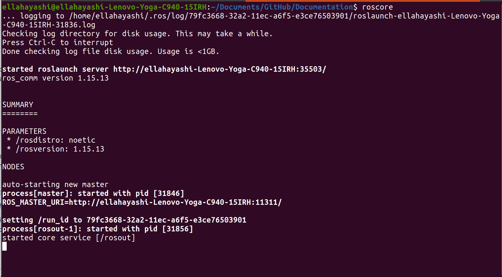

Installation
This page explains how to install ROS on Ubuntu Linux.
SYSTEM REQUIRMENTS
We will be using Ubuntu 20.04 / ROS Noetic / Python 3. For information on how to set up Ubuntu environment, and informatin on Linux Terminal/python 3, visit Prerequisites page.
DOWNLOAD ROS
Open up a new terminal and execute the following commands in order.
sudo sh -c 'echo "deb http://packages.ros.org/ros/ubuntu $(lsb_release -sc) main" > /etc/apt/sources.list.d/ros-latest.list'
sudo apt install curl
curl -s https://raw.githubusercontent.com/ros/rosdistro/master/ros.asc | sudo apt-key add -
sudo apt update
sudo apt install ros-noetic-desktop-full
echo "source /opt/ros/noetic/setup.bash" >> ~/.bashrc
OPTIONAL FOR DEBUGGING
These are recomended installs for following the tutorial guides
sudo apt install ros-noetic-rosbash
sudo apt-get install ros-noetic-rqt-graph
You should have ROS downloaded on your device now! Navigate to the ROS instalation page for any further information on the installation process.
TEST DOWNLOAD
To test your newly downloaded ROS, start a ROS master by simply opening a new terminal and execute ‘roscore’. You should see the following to know it is a success.
{kind=link}
To exit the roscore master, press Ctrl+C to kill the process.